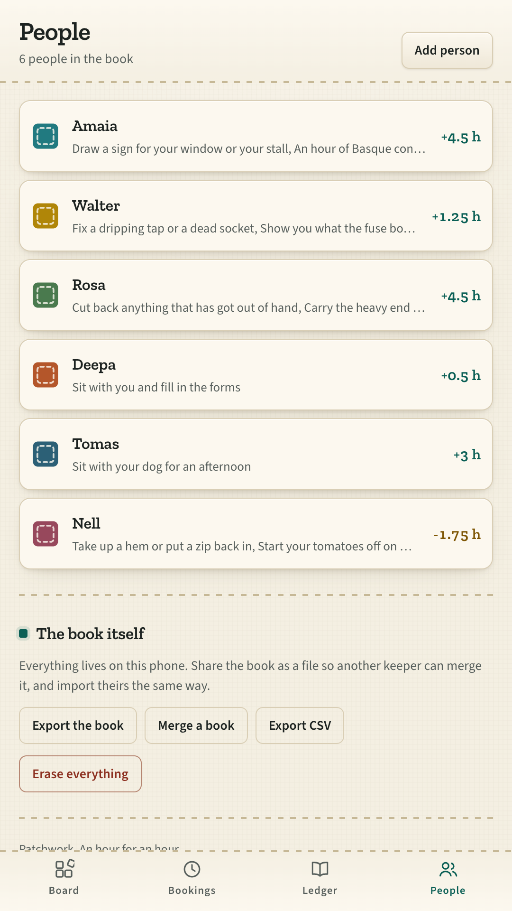

An hour for an hour.
Time banking is a hundred year old idea that has always died of paperwork. Patchwork is the paperwork, done properly, for a group that already meets.
Get it on Google Play
Time banking is a hundred year old idea that has always died of paperwork. Patchwork is the paperwork, done properly, for a group that already meets.
Get it on Google Play
A line is written only when both people say it happened.
That single rule is what keeps a time bank honest without anybody policing it. Balances are never stored either: they are worked out from the book every time you look, so the book cannot quietly disagree with itself.
A street, a building, a library circle, a congregation, a family. Somebody keeps the book on their phone: the roster, what each person can do for an hour, what each person could use an hour of, what has been arranged, and every hour that has actually changed hands.
It will not find you strangers, because it has no network to find them on. There are no prices, no rates and no money anywhere in it. An hour is an hour, whoever gives it.



Every exchange that both people have confirmed sews one patch, in the colour of whoever gave the hour, and the newest one is laid in turned. It sits in the corner of the board and fills the top of the ledger. A group that has helped each other forty times has a quilt to show for it, and it is drawn from the book rather than kept beside it.
Hours are hours, never prices. A booking says who gives, who receives, how long and when, and tells you before you arrange it how much the other person can still receive. A date that has gone by says so. Nothing is written into the book by one person alone.
Everyone begins at plus two. The group fronts it, and the way to settle up is to help anyone at all.
An overdraft is not a debt and the app never calls it one. Past minus three an exchange waits, and the app explains why in plain words instead of refusing.
Export it as a file and give it to another keeper, who merges it into theirs. Merging is matched by entry, so doing it twice changes nothing.
No internet permission, no account, no server, no analytics. Your neighbours' names cannot leave the device unless you export the book yourself.
A currency made of hours should not cost money.
Get it on Google Play